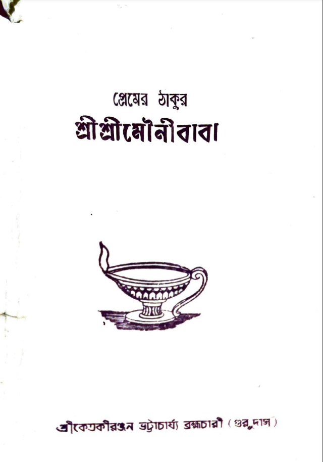

This is the biography of Sadguru Sri Sri Mounibaba, authored by Sri Gurudas ji.
This book describes the spiritual pursuit of Mounibaba from young Ramesh to Swami Sachchidananda Paramhansa, his divine pastimes, advices and also stories of his devotees.
Download e-book:
Ranibari Dham - An eternal abode of Guru Jagannath
This book describes the glories of Ranibari Dham and the spiritual significance in it's original transcendental position, pastimes of Mounibaba in Ranibari and his advices.
Download e-book:
Alor Dishari
The spiritual perfection "Alor Dishari", composed by Sri Gurudas ji, showers the divine light and knowledge in the life of a spiritual seeker and destroys the ignorance the veil. This book also describes the story of the formation of Sri Sri Anandamoy Mounibaba Mission (SRIAMM), it's goal and activities.
Download e-book:

Premer Thakur Mounibaba (Bengali)
This is the Bengali book about the biography of Mounibaba, composed by Sri Gurudas ji. It speaks in details about the life history and glories of Mounibaba and his wonderful pastimes with his devotees. This book also shed light on the advices of Mounibaba.